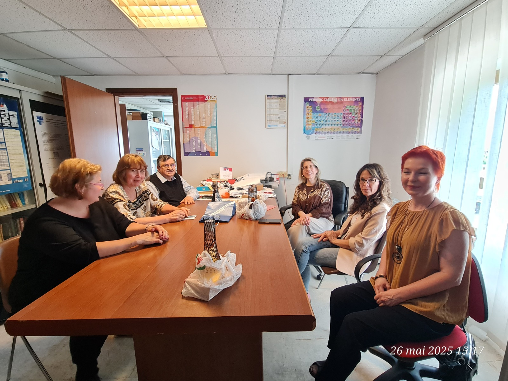
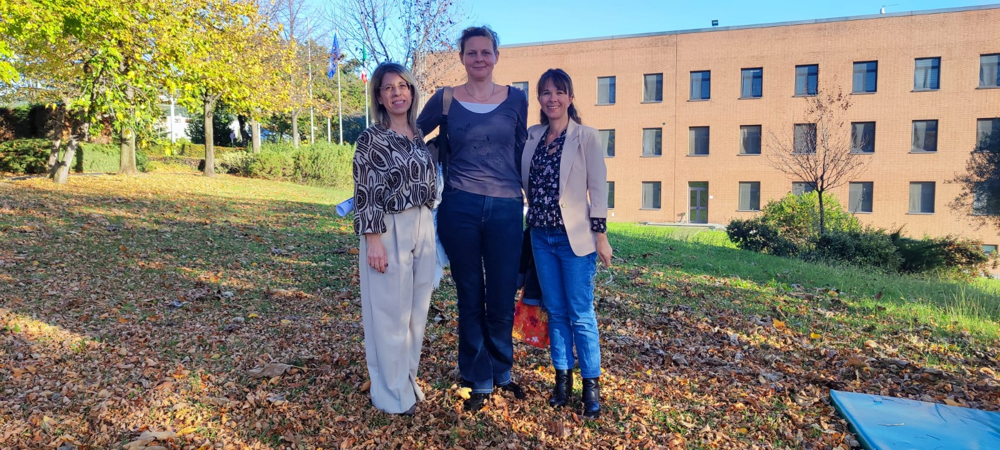
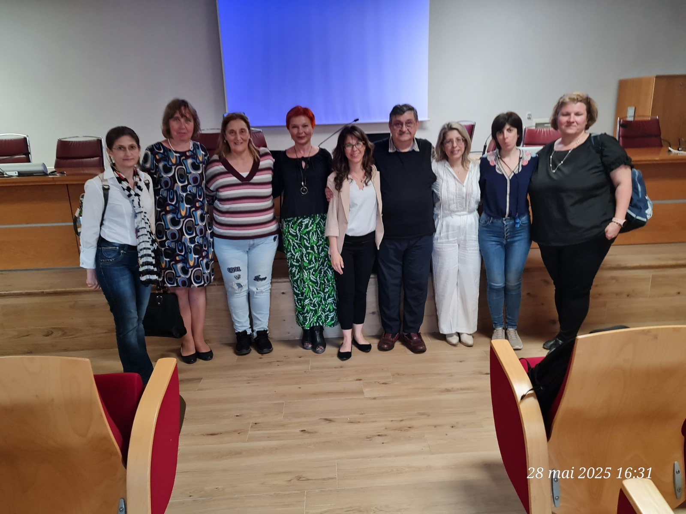
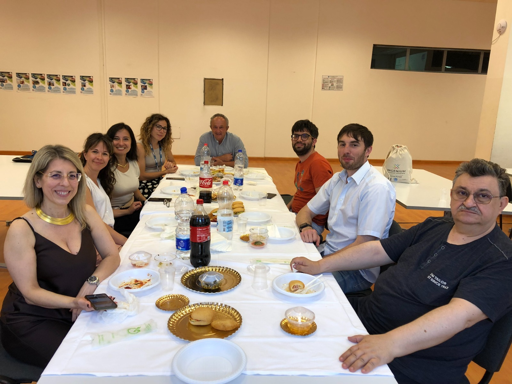
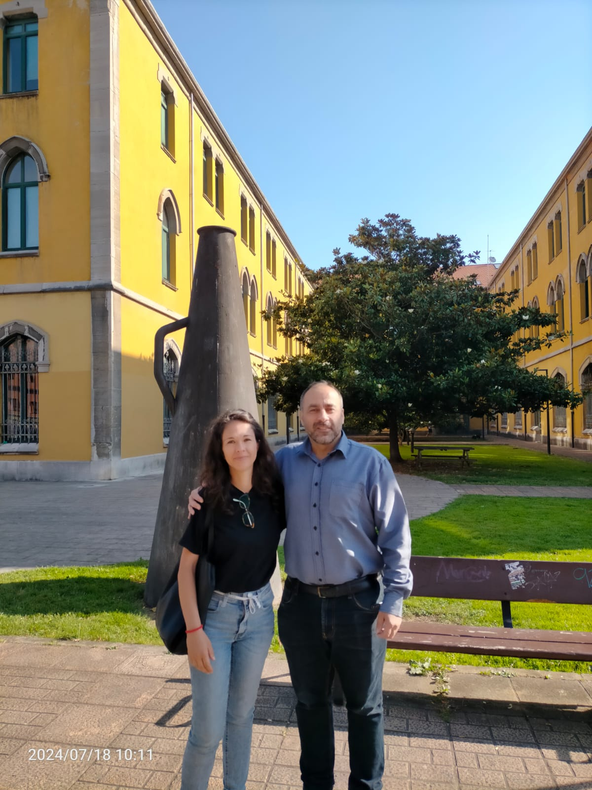
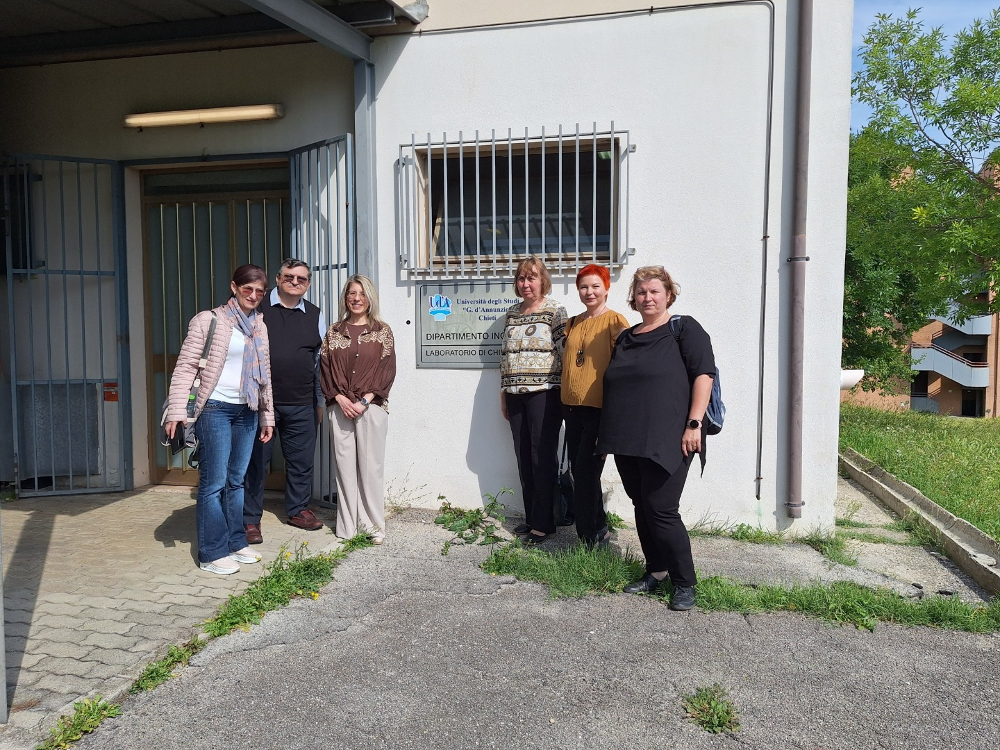
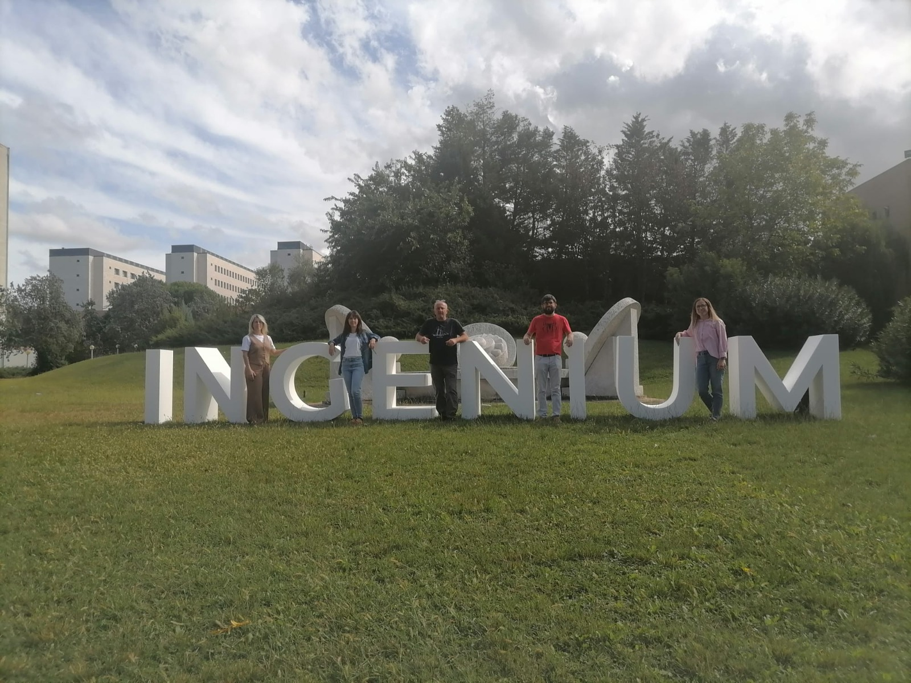
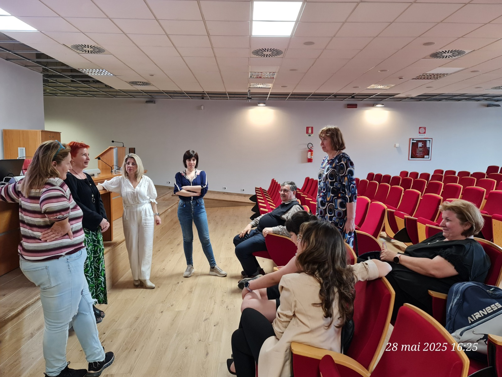

UP2Green
Upcycling of Wastes and By-products to Green Chemicals and Energy
UP2Green brings together researchers from Italy, France, Germany, Romania and Spain to develop innovative solutions for carbon capture, CO2 valorisation, waste upcycling and sustainable energy production.
About the Project
UP2Green addresses the urgent need for sustainable technologies capable of reducing carbon emissions while transforming waste streams into valuable resources. The project combines chemistry, materials science, environmental engineering, electrochemistry and sustainability studies.
Capture
Innovative materials and absorbent systems for carbon capture and storage.
Convert
Photocatalytic and electrochemical routes for CO2 conversion.
Valorise
Upcycling of lignin and agro-industrial by-products into chemicals.
Connect
A European research network for long-term INGENIUM collaboration.
The Consortium
Five INGENIUM institutions contribute complementary expertise to build an integrated pathway from carbon capture to green chemicals and energy.
Italy | UdA
University G. d'Annunzio of Chieti-Pescara
Project coordination, catalyst synthesis, carbon capture and CO2 photoconversion.
France | UdeR
Université de Rouen
Polymer membranes, ionic liquids and composite materials for CO2 separation.
Romania | TUIASI
Gheorghe Asachi Technical University of Iasi
Carbon capture systems, amino-acid absorbents and environmental engineering.
Germany | HS Ka
Karlsruhe University of Applied Sciences
Electrochemical processes, hydrogen production, peroxide generation and lignin valorisation.
Spain | UdO
University of Oviedo
Societal, ethical and sustainability perspectives of green technologies.
INGENIUM Network
Joint meetings, research exchange, dissemination and future grant applications.
Horizon EuropeCOSTJoint PhDCollaboration Network
The project is designed as an integrated collaboration in which each partner contributes a specific part of the circular green chemistry pathway.
Membranes + Ionic Liquids
CO2 Capture + Environmental Engineering
Catalysts + CO2 Conversion
H2 + Peroxides + Lignin Valorisation
Society + Sustainability + Dissemination
Network building + Future proposals
Team Members
Lucia Tonucci
University G. d'Annunzio of Chieti-Pescara
Project Coordinator
Research interests: Green chemistry, carbon capture and utilisation, sustainable catalytic processes, circular economy.
Contribution to UP2Green: Coordination of the consortium and development of innovative strategies for carbon capture, CO2 valorisation and sustainable chemical production.
Francesca Coccia
University G. d'Annunzio of Chieti-Pescara
Researcher
Research interests: Green catalysts, nanostructured materials, CO2 photoconversion, sustainable chemistry.
Contribution to UP2Green: Development and characterization of Cu/Zn-based photocatalysts for CO2 conversion.
Michele Ciulla
University G. d'Annunzio of Chieti-Pescara
Researcher
Research interests: Sustainable chemical processes, environmental chemistry, carbon capture technologies.
Contribution to UP2Green: Support to CO2 capture methodologies and sustainable chemical process development.
Kateryna Fatyeyeva
Université de Rouen
Principal Investigator
Research interests: Ionic liquids, polymer membranes, CO2 separation technologies.
Contribution to UP2Green: Design of innovative polymer/ionic liquid membranes for carbon capture.
Yaroslav Kobzar
Université de Rouen
Research Engineer
Research interests: Polymer synthesis, functional materials, membrane preparation.
Contribution to UP2Green: Synthesis and characterization of polymer-based materials for CO2 capture.
Laurent Colasse
Université de Rouen
Technician
Research interests: Thermal and physicochemical characterization of polymers and composites.
Contribution to UP2Green: Thermomechanical characterization of ionic liquids and polymer composite materials.
Igor Cretescu
Gheorghe Asachi Technical University of Iasi
Principal Investigator
Research interests: Environmental engineering, carbon capture systems, process assessment.
Contribution to UP2Green: Pilot-scale carbon capture systems and environmental engineering approaches.
Maria Harja
Gheorghe Asachi Technical University of Iasi
Professor
Research interests: Chemical engineering, absorbent systems, environmental applications.
Contribution to UP2Green: Design and testing of CO2 capture systems based on amino acid solutions.
Liliana Lazar
Gheorghe Asachi Technical University of Iasi
Associate Professor
Research interests: Environmental technologies, chemical engineering, sustainability assessment.
Contribution to UP2Green: Environmental assessment and optimization of capture technologies.
Gabriela Soreanu
Gheorghe Asachi Technical University of Iasi
Associate Professor
Research interests: Environmental engineering and management.
Contribution to UP2Green: Environmental impact assessment and sustainability analysis.
Ramona Elena Tataru
Gheorghe Asachi Technical University of Iasi
Lecturer
Research interests: Chemical engineering and absorbent systems.
Contribution to UP2Green: Development and evaluation of new absorbent systems.
Karsten Pinkwart
Karlsruhe University of Applied Sciences / Fraunhofer ICT
Principal Investigator
Research interests: Applied electrochemistry, hydrogen production, electrochemical technologies.
Contribution to UP2Green: Green hydrogen production and electrochemical conversion technologies.
Robin Kunkel
Fraunhofer ICT
Postdoctoral Researcher
Research interests: Electrochemical processes and reactor optimization.
Contribution to UP2Green: Electrochemical reactor development and process optimization.
Markus Graf
Karlsruhe University of Applied Sciences
Professor
Research interests: Electrical engineering, information technology, electrochemical systems.
Contribution to UP2Green: Electrochemical engineering and scale-up strategies.
Lukas Lentz
Fraunhofer ICT
PhD Student
Research interests: Hydrogen generation, peroxide production, electrochemical process development.
Contribution to UP2Green: Support to hydrogen generation and peroxide production activities.
Carmelo Polino
University of Oviedo
Researcher
Research interests: Philosophy, society, ethics and sustainability of science and technology.
Contribution to UP2Green: Societal, ethical and dissemination dimensions of sustainable technologies.
Project Activities
Scientific Meetings
Regular meetings to coordinate research activities, exchange results and plan next steps.
Research Mobility
Exchange of researchers, students and scientific expertise among partner institutions.
Laboratory Activities
Membrane development, catalyst synthesis, CO2 conversion tests, electrochemical hydrogen production and lignin valorisation.
Workshops and Seminars
Scientific seminars and workshops to share expertise and disseminate project outcomes.
Results and Outcomes
Scientific Outputs
Publications, conference presentations and joint research products developed by the consortium.
Technological Outputs
New membranes, catalytic materials, electrochemical protocols and green conversion routes.
Network Development
Long-term European collaboration and preparation of future Horizon Europe, COST and joint PhD initiatives.
Gallery








Contact
Lead Institution
Università degli Studi “G. d’Annunzio” di Chieti-Pescara
Email: francesca.coccia@unich.it
Project
UP2Green
Upcycling of Wastes and By-products to Green Chemicals and Energy
Funded within the INGENIUM Alliance framework.